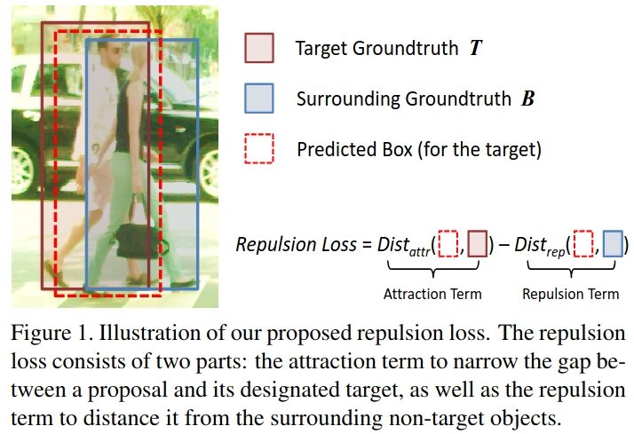
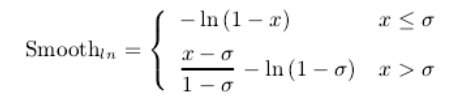
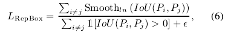

repulsion
简介
最近用yolov6的时候看到了这个loss，不太理解是什么，趁机学习学习
出自CVPR2018:Repulsion Loss:Detecting Pedestrains in a Crowd
github:https://github.com/dongdonghy/repulsion_loss_pytorch/blob/master/repulsion_loss.py
背景
与通用目标检测相比，遮挡情况在行人检测中更为普遍，为此也是行人检测领域最广为关注的问题之一。现实场景中行人的遮挡情况主要分为两种情况：一种是其他物体对行人的遮挡，这往往会带来目标信息的缺失，进而导致漏检；另一种是行人个体之间的相互遮挡，这往往会引入大量的干扰信息，进而导致更多的虚检。本文重点解决的是后一种情况导致的遮挡问题。作者将对这一问题进行了深入思考，并从loss的层面提出了一种新颖的解决方案，为我们呈现了一场思路和实验都十分精彩的盛宴。 
\[L = \alpha*L_{RepGT}+\beta*L_{RepBox}\]
LRepGT是使得预测框和周围的目标框尽可能远离
LRepBox是使得预测框和周围的其他预测框尽可能远离。
RepGT Loss
因为LRepGT是使得预测框P和周围的目标框G尽可能远离，这里的周围的目标框是除了匹配上的目标框以外的IoU最大的目标框，也即: \[G^{P}_{rep} = argmax IOU(G,P),G\in C\\{G_{P}^{Attr}}\]
受启发于IoU Loss，它们之间的距离定义为Intersection over Ground-truth (IoG)，也即 \[IoG(P,G)=\frac{area(P\cap G)}{area(G)}\]
RepGTloss为: \[L_{RepGT = \frac{\sum_{p\in p_{+} Smooth_{ln}(IoG(P,G_{Rep}^{P}))}}{|P_{+}|}}\] 
预测框P和周围的目标框G的IoG越大，则产生的loss也会越大，因此可以有效防止预测框偏移到周围的目标框上
\(\sigma\)是一个调整LRepGT敏感程度的超参数
度量距离为什么选用IoG而不是IoU呢？
仔细思考一下，如果是IoU的话，那么只要预测框足够大就一定能够使得RepGT loss减小，而这和我们的预期目标是不一致的，这点作者在文中也有论述。
Repulsion Term (RepBox)
因为LRepBox是使得预测框Pi和周围的其他预测框Pj尽可能远离，RepBox loss定义为：

其中Pi和Pj分别匹配上不同的目标框，它们之间的距离采用的是IoU，则
代码实现: 1
2
3
4
5
6
7
8
9
10
11
12
13
14
15
16
17
18
19
20
21
22
23
24
25
26
27
28
29
30
31
32
33
34
35
36
37
38
39
40
41
42
43
44
45
46
47
48
49
50
51
52
53
54
55
56
57
58
59
60
61
62
63
64
65
66
67
68
69
70
71
72
73
74
75
76
77
78
79
80
81
82
83
84import torch
import numpy as np
from .figure_iou import pairwise_bbox_iou
# reference: https://github.com/dongdonghy/repulsion_loss_pytorch/blob/master/repulsion_loss.py
def IoG(gt_box, pred_box):
inter_xmin = torch.max(gt_box[:, 0], pred_box[:, 0])
inter_ymin = torch.max(gt_box[:, 1], pred_box[:, 1])
inter_xmax = torch.min(gt_box[:, 2], pred_box[:, 2])
inter_ymax = torch.min(gt_box[:, 3], pred_box[:, 3])
Iw = torch.clamp(inter_xmax - inter_xmin, min=0)
Ih = torch.clamp(inter_ymax - inter_ymin, min=0)
I = Iw * Ih
G = ((gt_box[:, 2] - gt_box[:, 0]) * (gt_box[:, 3] - gt_box[:, 1])).clamp(1e-6)
return I / G
def smooth_ln(x, sigma=0.5):
return torch.where(
torch.le(x, sigma),
-torch.log(1 - x),
((x - sigma) / (1 - sigma)) - np.log(1 - sigma)
)
def repulsion_loss(pbox, gtbox, fg_mask, sigma_repgt=0.9, sigma_repbox=0, pnms=0, gtnms=0):#nms=0
loss_repgt=torch.zeros(1).to(pbox.device)
loss_repbox=torch.zeros(1).to(pbox.device)
bbox_mask = fg_mask.unsqueeze(-1).repeat([1, 1, 4])
bs = 0
pbox = pbox.detach()
gtbox = gtbox.detach()
for idx in range(pbox.shape[0]):
num_pos = bbox_mask[idx].sum()
if num_pos <= 0:
continue
_pbox_pos = torch.masked_select(pbox[idx],bbox_mask[idx]).reshape([-1, 4])
_gtbox_pos = torch.masked_select(gtbox[idx],bbox_mask[idx]).reshape([-1, 4])
bs += 1
pgiou = pairwise_bbox_iou(_pbox_pos, _gtbox_pos, box_format='xyxy')
ppiou = pairwise_bbox_iou(_pbox_pos, _pbox_pos, box_format='xyxy')
pgiou = pgiou.cuda().data.cpu().numpy()
ppiou = ppiou.cuda().data.cpu().numpy()
_gtbox_pos_cpu = _gtbox_pos.cuda().data.cpu().numpy()
for j in range(pgiou.shape[0]):
for z in range(j, pgiou.shape[0]):
ppiou[j, z] = 0
if (_gtbox_pos_cpu[j][0]==_gtbox_pos_cpu[z][0]) and (_gtbox_pos_cpu[j][1]==_gtbox_pos_cpu[z][1]) \
and (_gtbox_pos_cpu[j][2]==_gtbox_pos_cpu[z][2]) and (_gtbox_pos_cpu[j][3]==_gtbox_pos_cpu[z][3]):
pgiou[j, z] = 0
pgiou[z, j] = 0
ppiou[z, j] = 0
pgiou = torch.from_numpy(pgiou).to(pbox.device).detach()
ppiou = torch.from_numpy(ppiou).to(pbox.device).detach()
# repgt
max_iou, _ = torch.max(pgiou, 1)
pg_mask = torch.gt(max_iou, gtnms)
num_repgt = pg_mask.sum()
#print('num_repgt',num_repgt)
if num_repgt > 0:
pgiou_pos = pgiou[pg_mask, :]
_, argmax_iou_sec = torch.max(pgiou_pos, 1)
pbox_sec = _pbox_pos[pg_mask, :]
gtbox_sec = _gtbox_pos[argmax_iou_sec, :]
IOG = IoG(gtbox_sec, pbox_sec)
loss_repgt += smooth_ln(IOG, sigma_repgt).mean()
# repbox
pp_mask = torch.gt(ppiou, pnms)
num_pbox = pp_mask.sum()
#print('num_pbox',num_pbox)
if num_pbox > 0:
loss_repbox += smooth_ln(ppiou, sigma_repbox).mean()
loss_repgt /= bs
loss_repbox /= bs
torch.cuda.empty_cache()
return loss_repgt.squeeze(0), loss_repbox.squeeze(0)